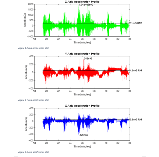

Battery sensors used to monitor vibration from above
Setup is easy
1. Install sensors using adhesive Loctite 495
2. Press the button to remove gravity offset
3. Record down the time you pressed the button
Automatic analysis
If you have installed multiple sensors, you can synchronize them and generate a report comparing vibrations on different positions of installation.
Just press a button.
Download the sample report here:
Includes:-
a) RMS (root mean squared vibration) analysis
b) Peak vibration analysis